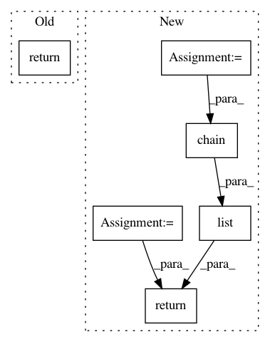

1b68a9d690f164190075fd5cf16937d191dafe75,pytext/data/bert_tensorizer.py,BERTTensorizerBase,numberize,#BERTTensorizerBase#Any#,293
Before Change
per_sentence_tokens = [
self.tokenizer.tokenize(row[column]) for column in self.columns
]
return self.tensorizer_script_impl.numberize(per_sentence_tokens)
def tensorize(self, batch) -> Tuple[torch.Tensor, ...]:
Convert instance level vectors into batch level tensors.
After Change
sentences = [self._lookup_tokens(row[column])[0] for column in self.columns]
sentences = self._wrap_numberized_text(sentences)
seq_lens = (len(sentence) for sentence in sentences)
segment_labels = ([i] * seq_len for i, seq_len in enumerate(seq_lens))
tokens = list(itertools.chain(*sentences))
segment_labels = list(itertools.chain(*segment_labels))
seq_len = len(tokens)
positions = list(range(seq_len))
// tokens, segment_label, seq_len
return tokens, segment_labels, seq_len, positions
def tensorize(self, batch) -> Tuple[torch.Tensor, ...]:
Convert instance level vectors into batch level tensors.
In pattern: SUPERPATTERN
Frequency: 3
Non-data size: 6
Instances
Project Name: facebookresearch/pytext
Commit Name: 1b68a9d690f164190075fd5cf16937d191dafe75
Time: 2019-12-18
Author: stevenliu@fb.com
File Name: pytext/data/bert_tensorizer.py
Class Name: BERTTensorizerBase
Method Name: numberize
Project Name: SheffieldML/GPy
Commit Name: 1931e447f4f3f91726a7ba2fb98d7365b8581994
Time: 2013-09-16
Author: acq11ra@sheffield.ac.uk
File Name: GPy/models/mrd.py
Class Name: MRD
Method Name: _get_param_names
Project Name: SheffieldML/GPy
Commit Name: 57eda0b77c130249b8b48aa1a46b608fe1446095
Time: 2013-09-02
Author: ibinbei@gmail.com
File Name: GPy/models/mrd.py
Class Name: MRD
Method Name: _get_param_names